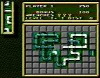

|


Review
Game Type: Puzzle
Place pieces of pipe onto a grid and try to keep them connected together. Slow
moving liquid oozes through the pipes as you go, and if it reaches a break in the
pipe, it spills and the round is over.
Gameplay: 95/100
A close second to Klax for the puzzle games I find most addictive. You won't
even think about the controls while playing, a sure sign that they're well
designed. (The crosspad and one button are all you'll use, anyway.) The
concept is cool, too. You start out leisurely placing pieces, trying to rack
up points by making loop within loop and using the permanent pieces strewn
about the board. Once the liquid is flowing, though, you'll find yourself
frantically trying to fit pieces into the tiny remaining space with the fluid
just behind where you're working. As new pieces and obstacles are introduced
the game gets more varied and more difficult.
Graphics: 30/100
Mediocre but they get the job done. This game is not about eye candy.
Sound: 70/100
Pipe Dream doesn't need fancy sound effects just like it doesn't need fancy
graphics. You have three excellent tunes to choose from while you play,
though, or you can turn the music off.
Overall: 95/100
If it wasn't made clear above, this game isn't an audiovisual feast. Its only
hook is that the game itself is highly addictive. Puzzle fans will find it
a pleasant departure from the slew of Tetris clones. Good luck finding a copy,
though, it took me months.
|